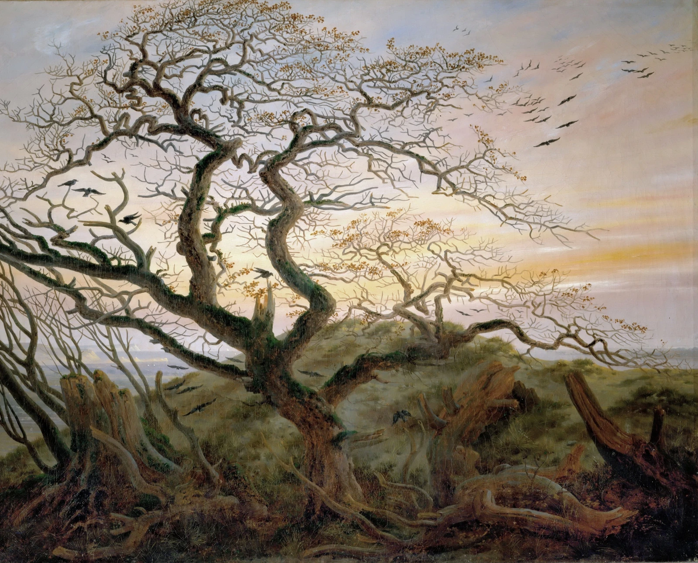

MIT
PhD student, advised by Prof. Dimitris Bertsimas
2026–present
Continual learning in autonomous research systems

PhD student, advised by Prof. Dimitris Bertsimas
2026–present
Continual learning in autonomous research systems
Research Fellow, advised by Prof. Tomer Ullman
2025–present
Work at the intersection of computer vision and human cognition that led to my bachelor's thesis
Co-Founder, Advisor
2025–present
Non-profit network of the brightest European founders U26.
Researcher, advised by Prof. Paola Pierleoni
2024–2025
Designed and trained light ML models for movement detection on wearables
BSc · Economics, Management and Computer Science
2023–2026
Co-Founder, Chairman
2023–present
Italy's first student-led research labs on AI, Neuroscience, and Robotics. Active in Bocconi, Polimi, Sapienza, and more soon.